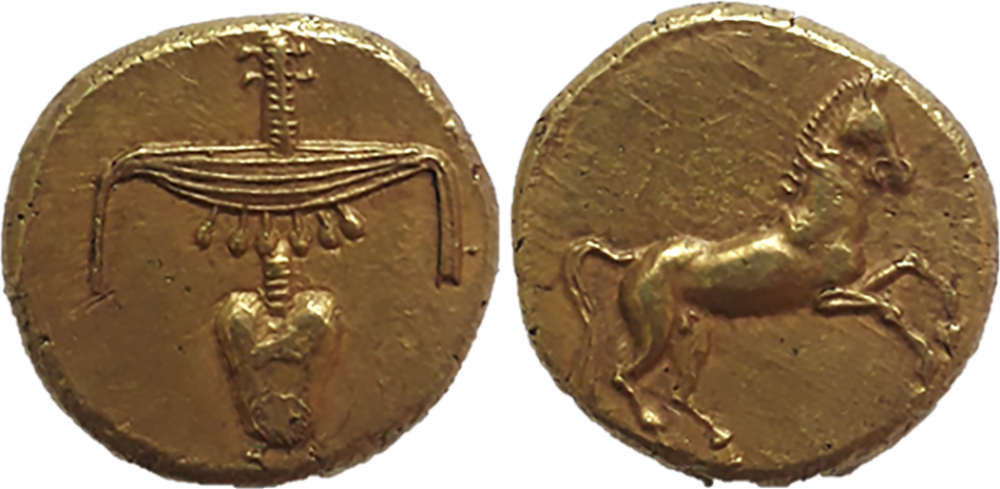

HISTORICAL CONTEXT
THE LATE PERIOD · 30TH DYNASTY
A coin from the reign of Nectanebo II
This gold stater is associated with Nectanebo II, the last native ruler of Egypt before the second Persian conquest.
RULER / DYNASTYNectanebo II · 30th Dynasty
DATE / PERIOD360–342 BC · Late Period
